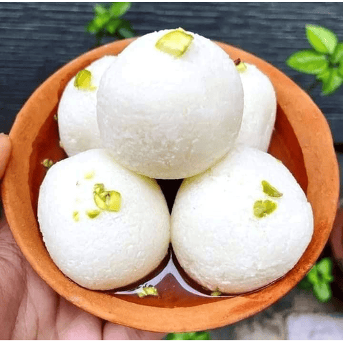

Back to Home

Rasgulla
Rasgulla is a beloved Indian dessert known for its soft, spongy texture and delicate
sweetness. Made from freshly prepared chenna (curdled milk solids), these light and airy
balls are cooked in a fragrant sugar syrup, creating a melt-in-your-mouth treat. Perfect
for festive occasions or as a sweet ending to any meal, rasgulla is a timeless classic in
Indian cuisine.
Prep Time: 20 min
Cook Time: 40 min
Total Time: 1 hour
0 Likes
Ingredients
- 1 liter milk
- 1 tbsp lemon juice or vinegar
- 1 cup sugar
- 4 cups water
- Cardamom pods (optional)
Preparation
- Boil milk and curdle it using lemon juice. Strain the chenna and knead it into a smooth dough.
- Roll into small balls and boil in sugar syrup for 20-25 minutes.
- Allow to cool and soak for at least 30 minutes before serving.